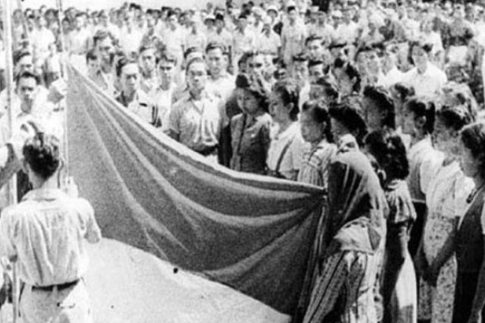
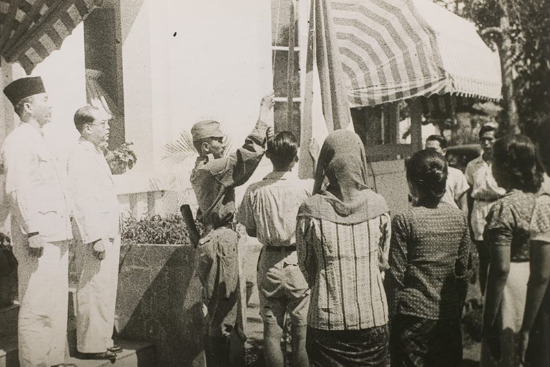
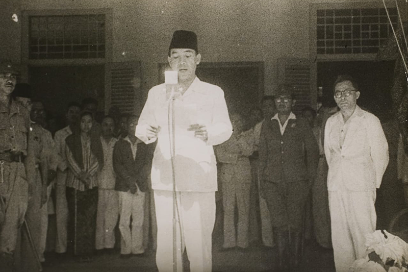
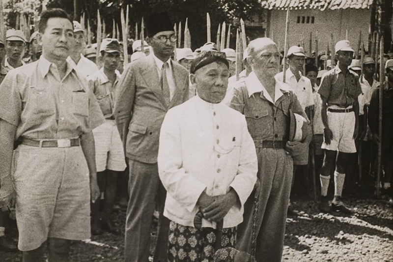
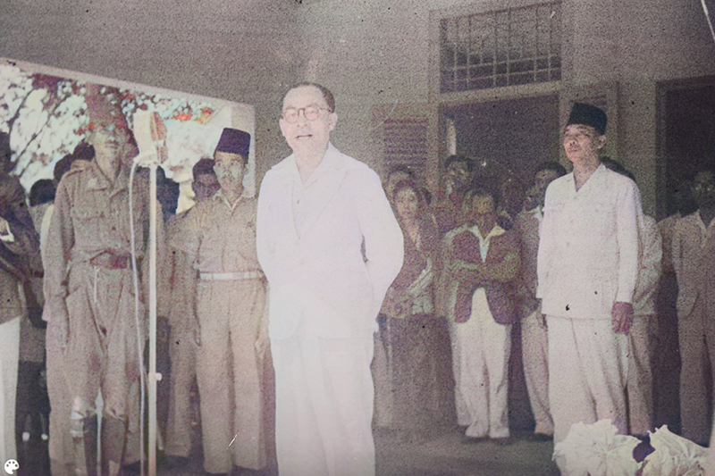
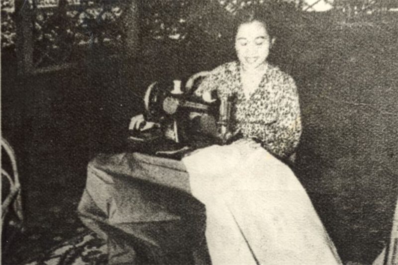
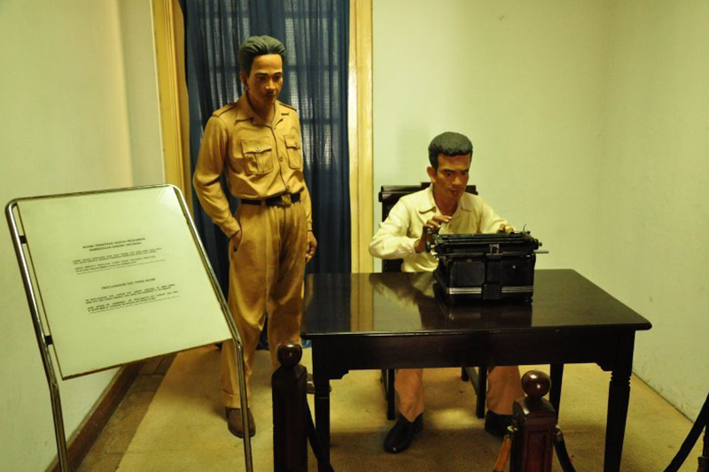

Toggle navigation
Home
History
Activities
Trivias
About
Glimpse of the past
See what it was like in Indonesia around the earlier days of their independence.

Indonesian flag being hoisted

Indonesian flag being hoisted
Ir. Soekarno in-front of hundreds of Indonesians

Ir. Soekarno declaring the independence of Indonesia

KRT Radjiman Wedyodiningrat head of PPKI witnessing the reading of Indonesian Declaration of Independence

Moh. Hatta delivering his speech after Ir. Soekarno
Soekarno and Hatta discussing the Declaration of Independence with other key figures

Fatmawati sewing the first Indonesian flag

Recreation of when Sayuti Melik typed the Declaration of Independence